The Deterministic renderer is the studio's fast, instant-image renderer. It draws the stone
completely in a single pass, with no waiting and no visual noise, which makes it the renderer to
leave on while you turn the stone, try a material, or compare two settings side by side. Its
picture never changes on its own: it looks the same the instant after you release the mouse as
it does a minute later.
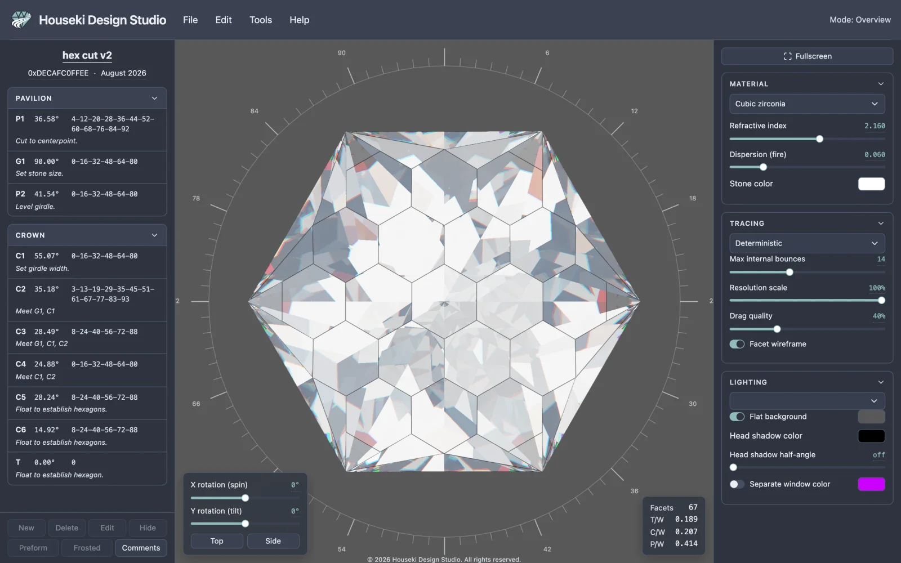
The stone the studio opens with, in the Deterministic renderer.
Switching renderers
The renderer is chosen from the dropdown at the top of the Tracing
section of the settings, on the right of the window. It lists three choices:
Deterministic (the default), Monte Carlo and
Flat. Hovering over the dropdown shows a tooltip describing whichever
renderer is currently selected.
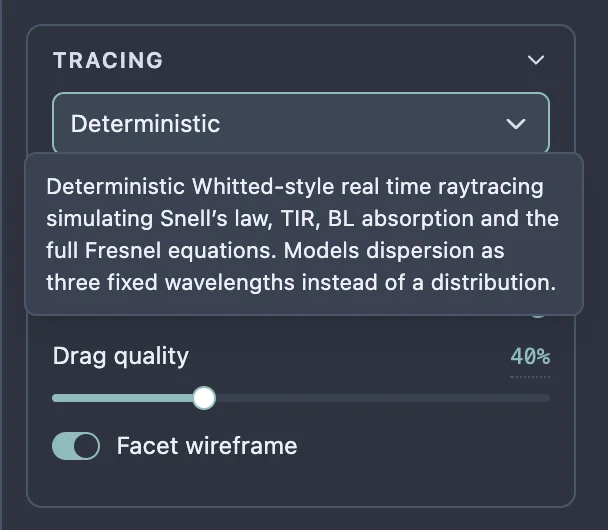
Hovering the renderer dropdown shows what the selected renderer does.
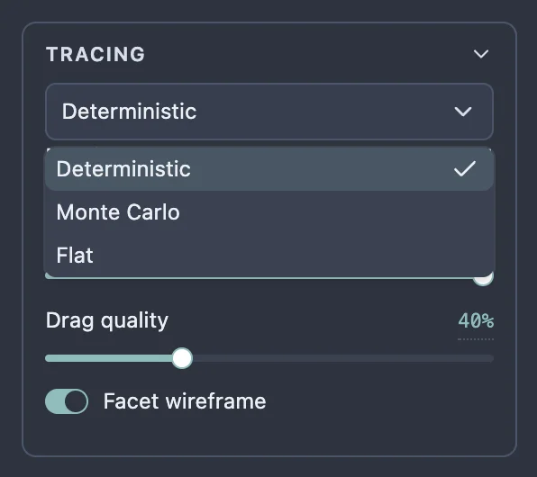
The renderer dropdown open: Deterministic, Monte Carlo and Flat.
Choosing Deterministic redraws the stone at once. Nothing else on the
page needs to change: every other setting – material, lighting, bounces – carries straight
over to whichever renderer is selected.
What the picture is showing
The Deterministic renderer follows light through the stone the way a diamond actually bends
and reflects it, using a handful of physical rules:
Snell's law is what bends a ray as it crosses from air into the stone, or
back out again – it is why a faceted stone's reflections look broken into distinct flashes
instead of one smooth mirror.
Total internal reflection is what happens when light inside the stone hits a
facet too steeply to escape: instead of dimming through it, the light bounces back inside,
which is what gives a well-cut stone its brilliance – the bright, mirror-like flashes across
its face.
The full Fresnel equations decide, at every surface, how much light reflects
and how much passes through, depending on the angle it arrives at. It is why a facet can look
almost like a window straight on and almost like a mirror at a glancing angle.
Beer-Lambert absorption is the stone taking on colour as light travels
through it: the further light has to travel inside the stone, the more of that colour it picks
up, which is what gives a coloured stone its body colour and its darker, richer tones in its
deepest parts.
The Deterministic renderer's own tooltip names these by name: Snell's law,
total internal reflection ("TIR"), Beer-Lambert ("BL") absorption and the full Fresnel
equations.
Its one simplification is fire – the rainbow-coloured flashes a stone throws
when it bends different colours of light by slightly different amounts (called dispersion). The
Deterministic renderer traces only three fixed colours (a red, a green and a blue) rather than
the whole visible spectrum, so its fire shows up as a handful of coloured edges rather than a
smooth rainbow. It is still fast for exactly this reason: the Monte
Carlo renderer traces a whole spectrum of colours instead, at the cost of speed.
Controls
Every control below works with the Deterministic renderer. The ones that are specific to the
Monte Carlo renderer (Samples to accumulate, Samples per
frame) are hidden while Deterministic is selected, because this renderer does not use
them – see the Monte Carlo renderer page for those.
Material
The material dropdown holds a set of gem presets (diamond, ruby, emerald, and others), each
setting a refractive index, a dispersion and a stone colour together.
Refractive index is how strongly the stone bends light. A higher
index traps more light inside through total internal reflection, which is what makes a stone
look brighter and more brilliant.
Dispersion (fire) sets how far the stone spreads light into fire.
0 means no fire at all (and renders about three times faster); higher values spread the colours
further apart.
Stone color is the stone's body colour: how much of each colour of
light survives passing through it. White is colourless. Opening it shows an
Opacity slider, which is how strongly the stone takes on that colour –
lower is paler, and 0 is colourless whatever colour is picked. It never makes the stone cloudy or
see-through to what is behind it.
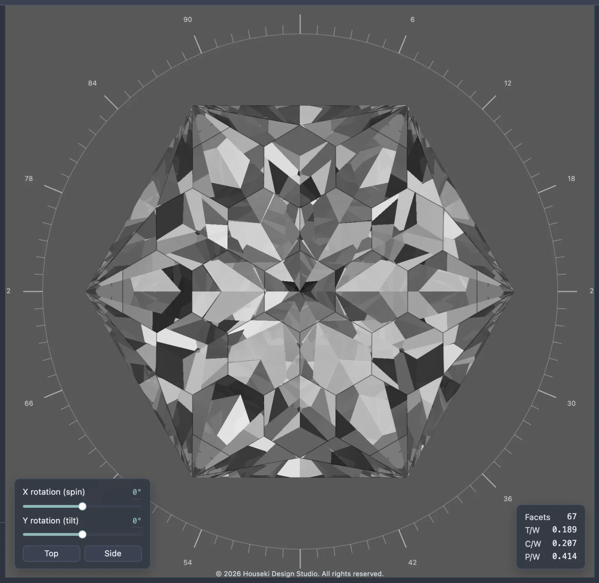
Dispersion at 0: no fire.
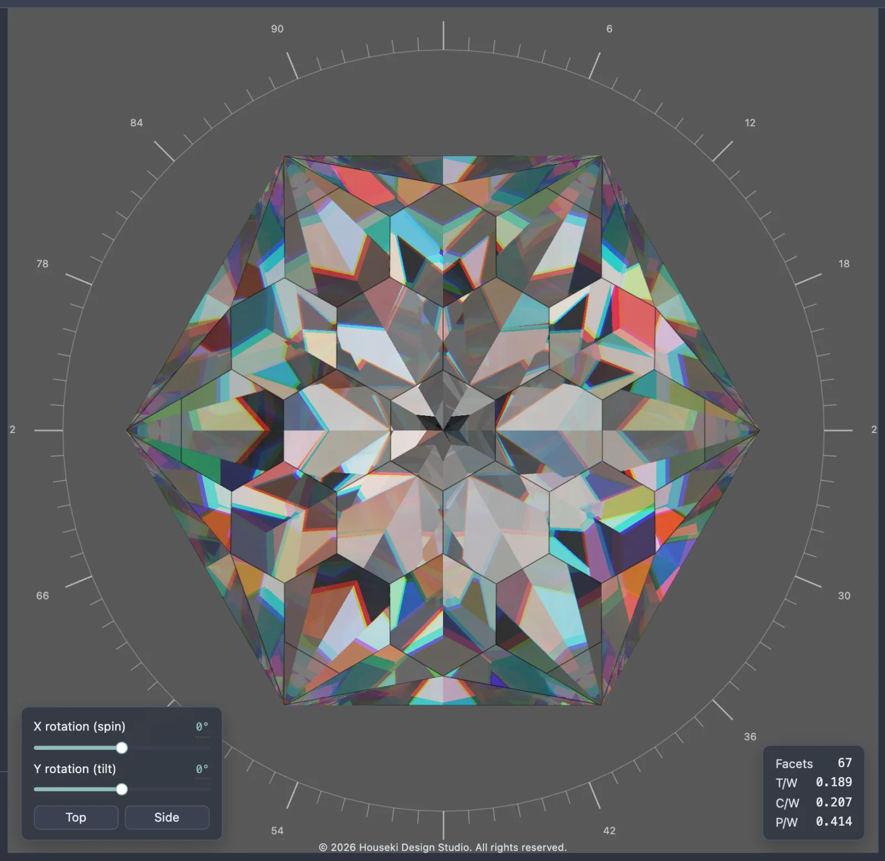
Dispersion turned up: coloured fire at the facet edges. The Deterministic renderer
only has three colours to work with, so the fire looks like coloured edges rather than a full
rainbow.
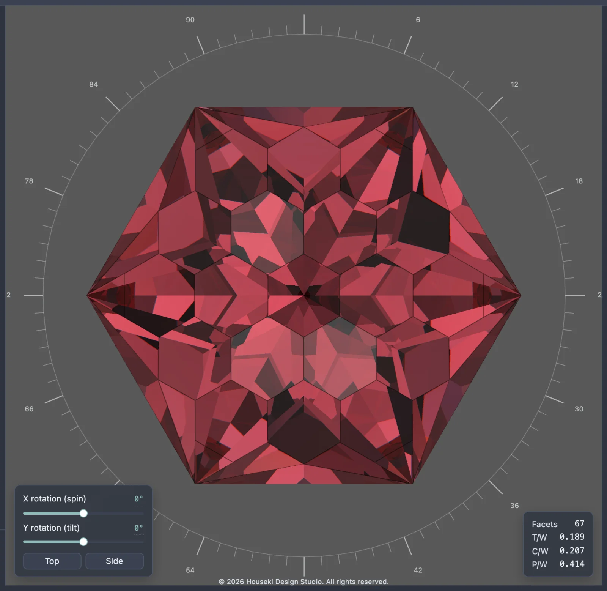
The Ruby preset: a coloured stone.
Tracing
Max internal bounces is how many times light may reflect inside the
stone before the renderer gives up on it. A higher number is more accurate for deep stones, but
slower. Light still bouncing around when the renderer runs out is shown as a darker tint of the
stone's own colour rather than left blank. It goes up to 64. The minimum is 3 – any lower and there is barely any
glass left to see, and the tooltip suggests using the Flat renderer
instead if that little detail is wanted.
Resolution scale renders at a fraction of the screen's resolution
while the view is still. Lower is faster but blurrier. It defaults to 100%.
Drag quality is how close to full quality the picture stays while the
stone is being turned or zoomed – see "Turning the stone" below.
Facet wireframe outlines every facet you can see (edges hidden behind
the stone are not drawn). It is on by default.
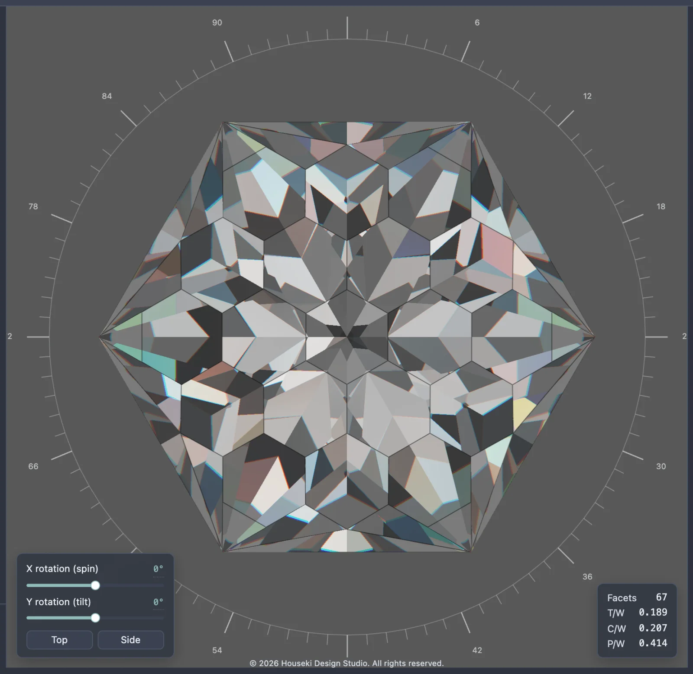
3 internal bounces: light runs out quickly, and unresolved light fills in as a darker
tint.
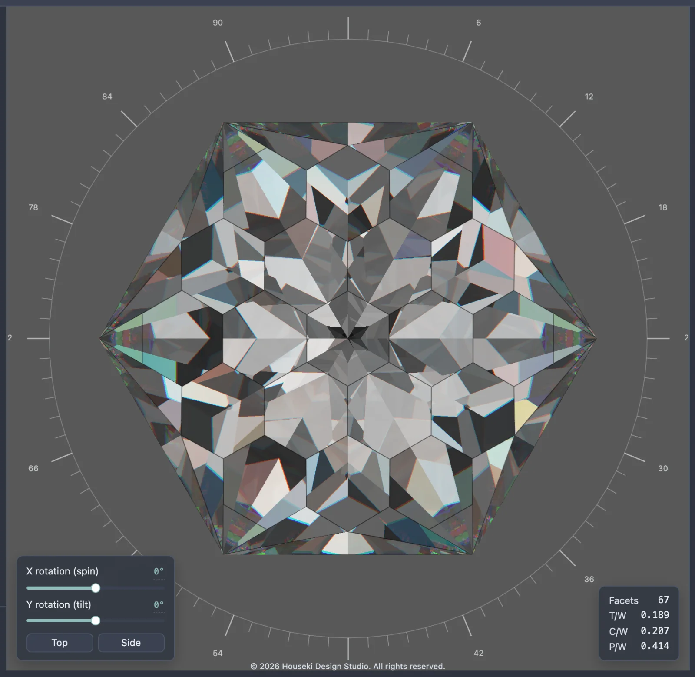
32 internal bounces: light keeps bouncing longer, showing more of the stone's internal
reflections.Facet wireframe on.
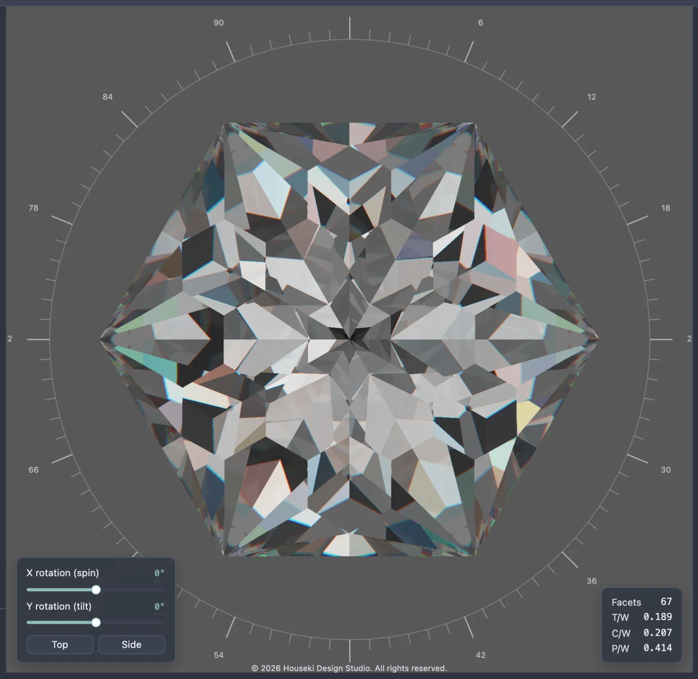
Facet wireframe off.
Lighting
The lighting model dropdown chooses what lights the stone: Angle rings
colours the light by how steeply it arrives (red from overhead, then cyan, yellow and magenta
towards the horizon), which is useful for seeing which angles a cut actually uses;
Isometric is even white light from everywhere above;
Cosine is brightest overhead, fading towards the horizon; and
Skybox image lights the stone with a photographed room, which is the
studio's default and the most realistic-looking of the four.
Choosing one of the first three shows a Neutralise material button:
those three are measurement tools, and only make sense on a colourless, non-dispersive stone,
since the stone's own colour otherwise multiplies the reading. The button zeroes the stone's
colour and dispersion.
Flat background shows a plain colour behind the stone instead of the
lighting, and also colours light seen through the back of the stone, unless
Separate window color is turned on.
Head shadow color is the colour of light blocked by your own head,
including the small dot at the centre of the table when the stone faces you straight on. Black
is realistic; a bright colour shows which facets depend on light from directly behind the
viewer.
Head shadow half-angle sets how wide that shadow is. 0 turns it off.
Separate window color colours light that leaks straight through the
back of the stone (a "window"), so those leaks are easy to spot. Off, that light shows the flat
background or the lighting instead.
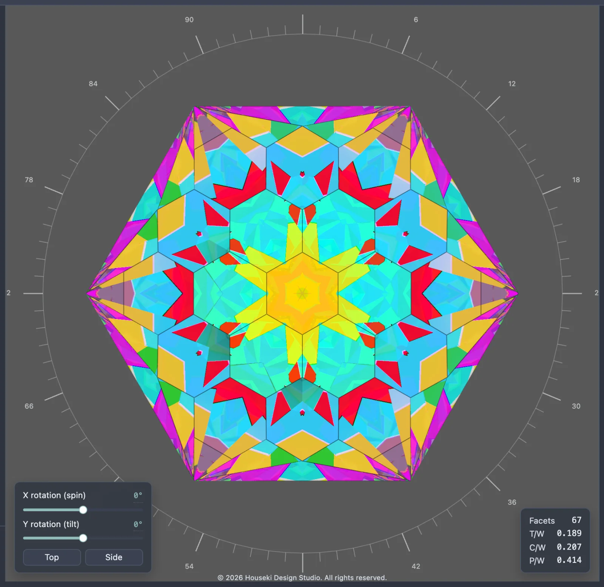
Angle rings.Isometric.
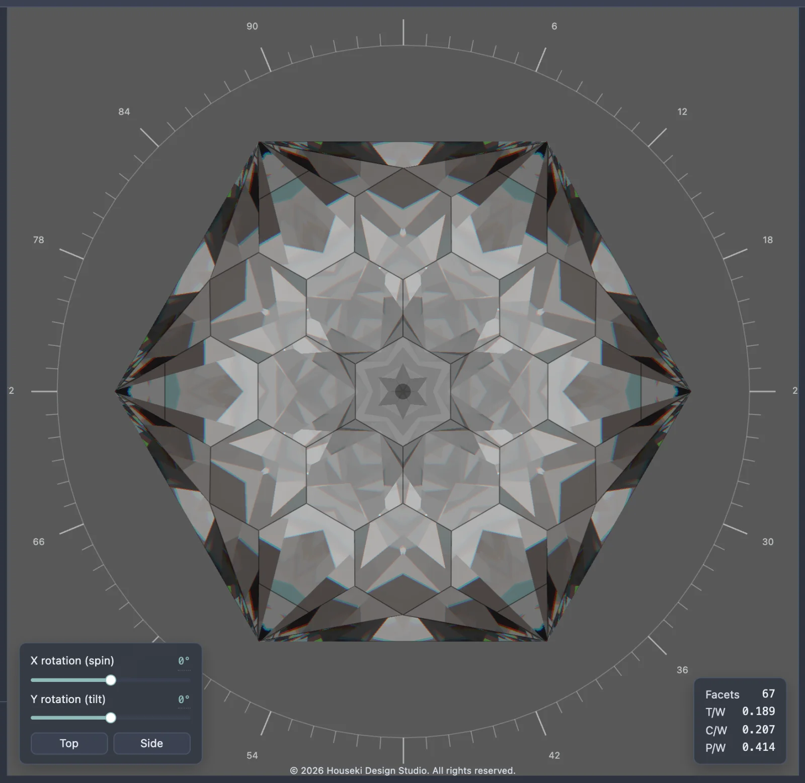
Cosine.Skybox image, the studio's default.
Turning the stone
Drag the stone with the mouse to orbit it, and scroll the mouse wheel to zoom. Any drag, wheel
step, or move of the X rotation (spin) or Y rotation
(tilt) sliders drops the picture to Drag quality while it moves
(scaling both the resolution and the internal bounces together), then returns to full quality
shortly after the movement stops. Because the Deterministic renderer finishes in one pass, this
is only about keeping the stone responsive while it moves; the picture itself never needs to
settle the way the Monte Carlo renderer's does.
A slider's own readout can be clicked to type an exact number: type the value and press
Enter to apply it, or Escape to cancel.
The Flat renderer
A third choice in the same dropdown, Flat does no rendering at all: it
shows the stone as a flat, opaque surface in the stone's own colour, with no light, reflection or
fire. It is instant, and with Facet wireframe turned on it draws a clean
line diagram of the facets – useful for looking at a cut's geometry without anything else
competing for attention.
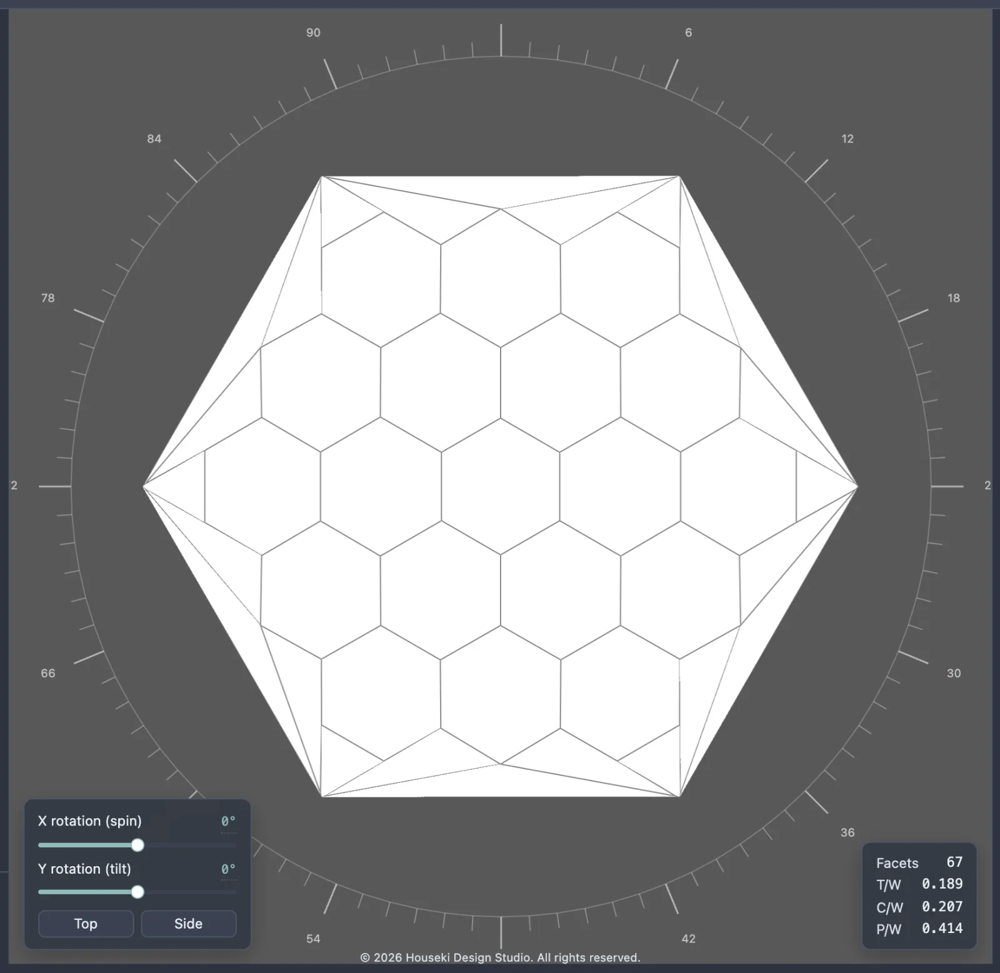
The Flat renderer: no lighting, no reflections, just the stone's outline and colour.